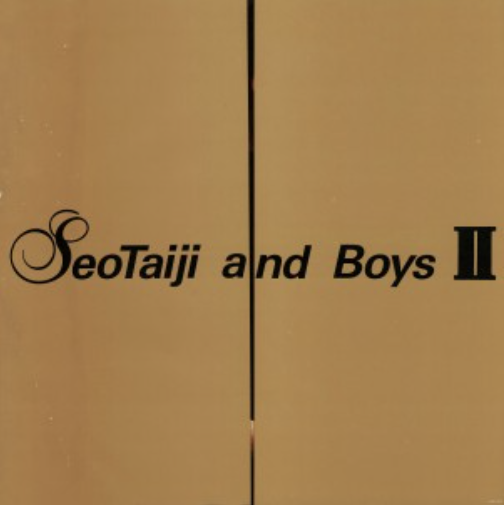
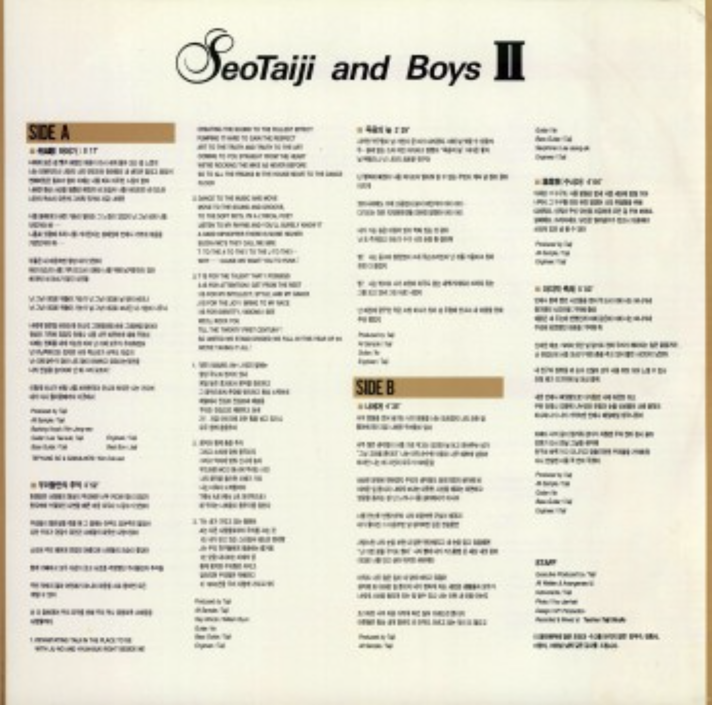
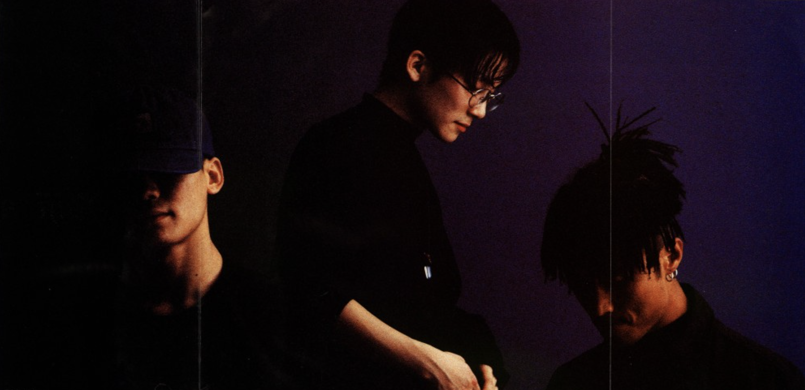
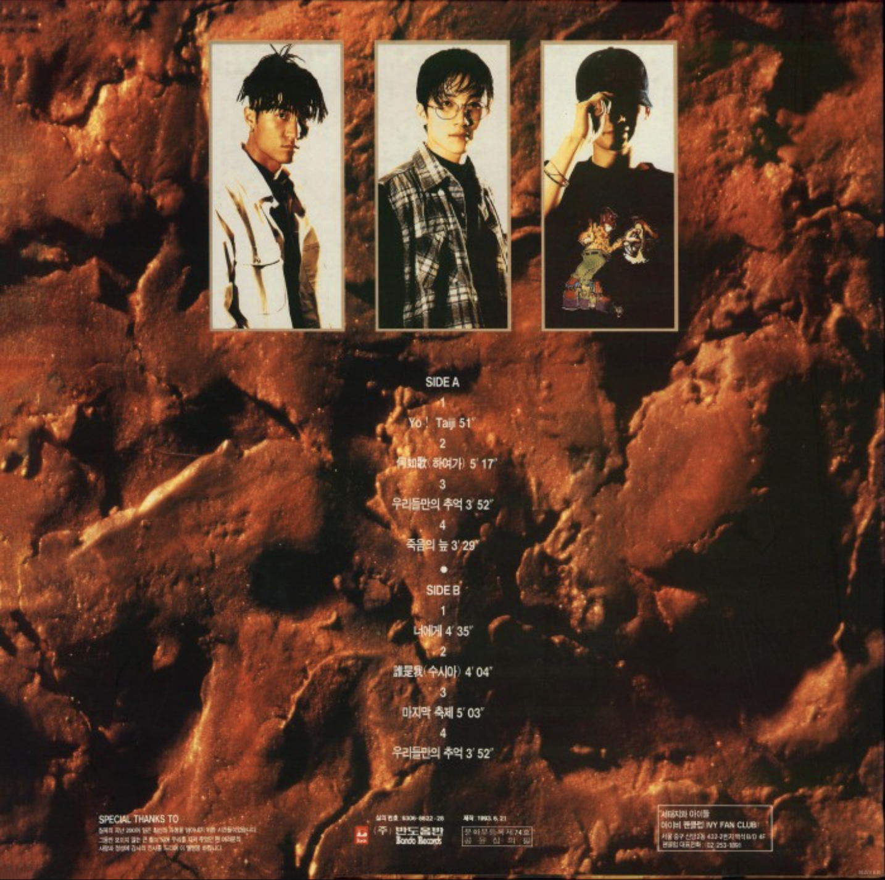

Seotaiji And Boys II
<1993>
가수 소개
서태지, 양현석, 이주노로 구성된 3인조 댄스 그룹 '서태지와 아이들'은 1992년 데뷔 당시 낯설었던 랩과 댄스 음악을 한국 주류 시장에 성공적으로 안착시키며 대한민국 대중음악의 패러다임을 바꾼 전설적인 그룹입니다. 리더 서태지가 작사·작곡·프로듀싱 등 음악적 활동 전반을 진두지휘하는 독보적인 체제를 갖췄으며, 양현석과 이주노가 안무 및 퍼포먼스를 완성하며 시너지를 냈습니다. 특히 막내인 서태지가 팀의 리더를 맡고 활동 전반을 주도하는 파격적인 구성에도 불구하고, 데뷔와 동시에 엄청난 신드롬을 일으키며 1996년 은퇴하기까지 한국 가요계에 지대한 영향력을 발휘한 상징적인 팀입니다.
앨범소개
1993년 반도음반에서 발매한 서태지와 아이들의 정규 2집이다. 6개월간의 공백기를 거쳐 완성한 이 앨범에서는 타이틀곡 <하여가>가 크게 히트했으며, 메탈, 국악, 레이브 등 1집보다 더 다양한 시도를 선보였다. 이 음반은 대한민국 앨범 최초로 더블 밀리언셀러를 기록했다.
🎵



